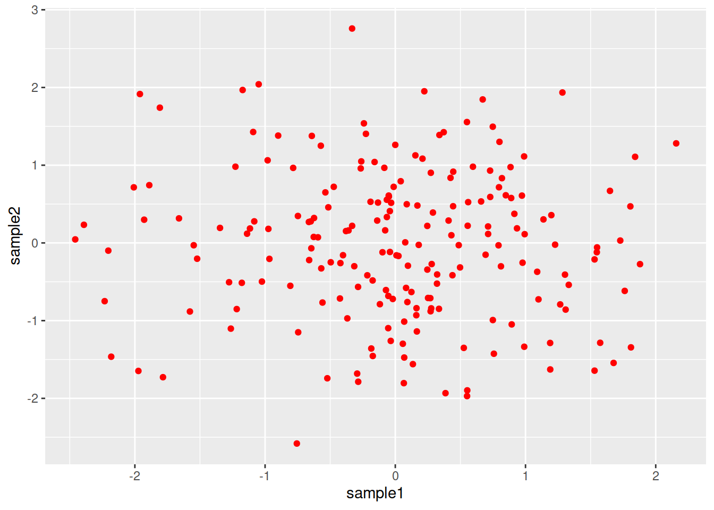
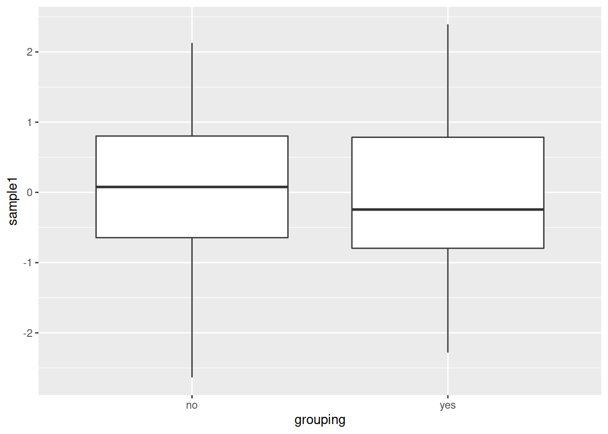
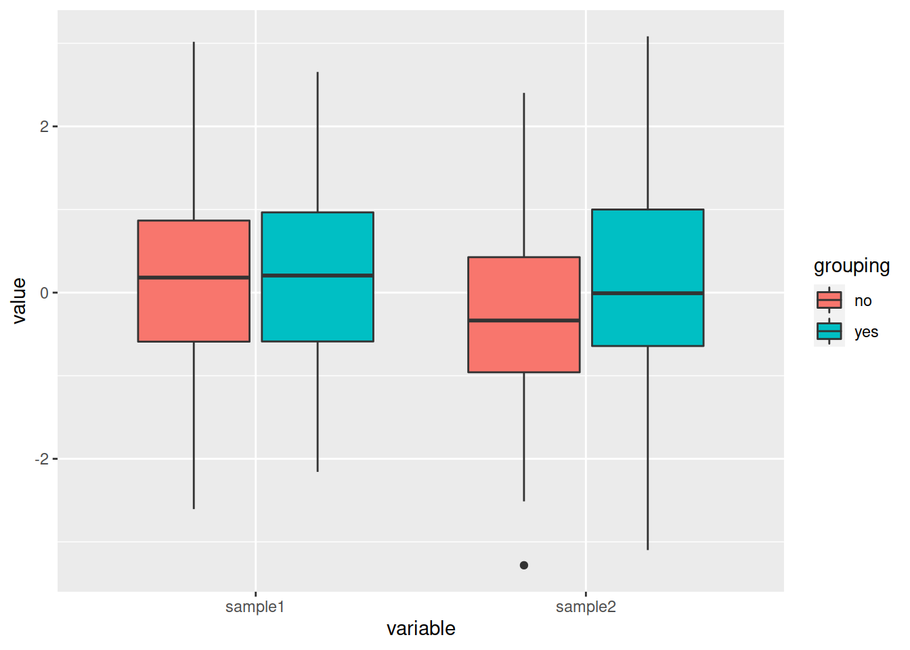

16.11 Volcano plots
A volcano plot is a type of scatter plot represents differential expression of features (genes for example): on the x-axis we typically find the fold change and on the y-axis the p-value.
# Download the data we will use for plotting
download.file("https://raw.githubusercontent.com/biocorecrg/CRG_RIntroduction/master/de_df_for_volcano.rds", "de_df_for_volcano.rds", method="curl")
# The RDS format is used to save a single R object to a file, and to restore it.
# Extract that object in the current session:
tmp <- readRDS("de_df_for_volcano.rds")
# remove rows that contain NA values
de <- tmp[complete.cases(tmp), ]# The basic scatter plot: x is "log2FoldChange", y is "pvalue"
ggplot(data=de, aes(x=log2FoldChange, y=pvalue)) + geom_point()
Doesn’t look quite like a Volcano plot…
Convert the p-value into a -log10(p-value)
# Convert directly in the aes()
p <- ggplot(data=de, aes(x=log2FoldChange, y=-log10(pvalue))) + geom_point()# Add more simple "theme"
p <- ggplot(data=de, aes(x=log2FoldChange, y=-log10(pvalue))) + geom_point() + theme_minimal()# Add vertical lines for log2FoldChange thresholds, and one horizontal line for the p-value threshold
p2 <- p + geom_vline(xintercept=c(-0.6, 0.6), col="red") +
geom_hline(yintercept=-log10(0.05), col="red")# The significantly differentially expressed genes are the ones found in the upper-left and upper-right corners.
# Add a column to the data frame to specify if they are UP- or DOWN- regulated (log2FoldChange respectively positive or negative)
# add a column of NAs
de$diffexpressed <- "NO"
# if log2Foldchange > 0.6 and pvalue < 0.05, set as "UP"
de$diffexpressed[de$log2FoldChange > 0.6 & de$pvalue < 0.05] <- "UP"
# if log2Foldchange < -0.6 and pvalue < 0.05, set as "DOWN"
de$diffexpressed[de$log2FoldChange < -0.6 & de$pvalue < 0.05] <- "DOWN"
# Re-plot but this time color the points with "diffexpressed"
p <- ggplot(data=de, aes(x=log2FoldChange, y=-log10(pvalue), col=diffexpressed)) + geom_point() + theme_minimal()
# Add lines as before...
p2 <- p + geom_vline(xintercept=c(-0.6, 0.6), col="red") +
geom_hline(yintercept=-log10(0.05), col="red")## Change point color
# 1. by default, it is assigned to the categories in an alphabetical order):
p3 <- p2 + scale_color_manual(values=c("blue", "black", "red"))
# 2. to automate a bit: ceate a named vector: the values are the colors to be used, the names are the categories they will be assigned to:
mycolors <- c("blue", "red", "black")
names(mycolors) <- c("DOWN", "UP", "NO")
p3 <- p2 + scale_colour_manual(values = mycolors)# Now write down the name of genes beside the points...
# Create a new column "delabel" to de, that will contain the name of genes differentially expressed (NA in case they are not)
de$delabel <- NA
de$delabel[de$diffexpressed != "NO"] <- de$gene_symbol[de$diffexpressed != "NO"]
ggplot(data=de, aes(x=log2FoldChange, y=-log10(pvalue), col=diffexpressed, label=delabel)) +
geom_point() +
theme_minimal() +
geom_text()
# Finally, we can organize the labels nicely using the "ggrepel" package and the geom_text_repel() function
# load library
library(ggrepel)
# plot adding up all layers we have seen so far
ggplot(data=de, aes(x=log2FoldChange, y=-log10(pvalue), col=diffexpressed, label=delabel)) +
geom_point() +
theme_minimal() +
geom_text_repel() +
scale_color_manual(values=c("blue", "black", "red")) +
geom_vline(xintercept=c(-0.6, 0.6), col="red") +
geom_hline(yintercept=-log10(0.05), col="red")